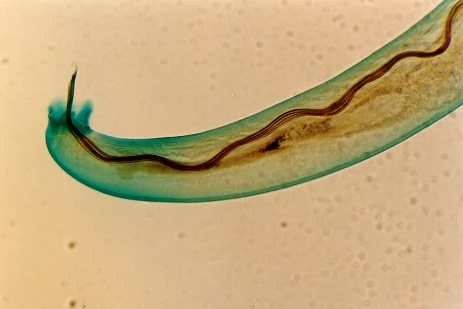

其他无脊椎动物 · 动物界
广州管圆线虫 Angiostrongylus cantonensis

寄生于鼠类肺动脉的线虫，幼虫经螺类中间宿主传播，人误食生螺或污染蔬菜可致嗜酸性脑膜炎。
- 分类
- 门线虫动物门纲色矛纲目圆线虫目科管圆线虫科属管圆线虫属
- 栖息环境
- 鼠类肺动脉内（成虫）；螺类、蛞蝓体内与潮湿蔬菜表面（幼虫）
- 地理分布
- 中国南方、东南亚及太平洋岛屿，随中间宿主扩散
- 保护级别
- 病原寄生虫，无保护需求，属公共卫生防控对象
物种志
广州管圆线虫的成虫体细长，雌虫长约二十至三十毫米，雄虫略短，寄生于鼠类的肺动脉内。雌虫产卵后，卵在肺毛细血管中孵化，幼虫穿过肺泡进入气管，被咽下后随粪便排出。幼虫在外界需进入螺类或蛞蝓体内才能继续发育，在螺体内经两次蜕皮成为感染性幼虫。
它的终宿主是鼠类，中间宿主包括福寿螺、褐云玛瑙螺等陆生螺类和蛞蝓。人因生食或半生食螺肉、蛞蝓，或食用被其黏液污染的蔬菜而感染。幼虫进入人体后多移行至脑部，引起嗜酸性脑膜炎。该病在中国南方、东南亚和太平洋岛屿有分布，与生食螺类的习惯密切相关。防护措施包括彻底煮熟螺肉、生熟分开、清洗蔬菜，出现头痛发热应及时就医并告知饮食史。
形态与习性
- 成虫体长雌虫二十至三十毫米，寄生于鼠肺动脉
- 终宿主鼠类
- 中间宿主福寿螺、褐云玛瑙螺等螺类与蛞蝓
- 感染途径生食或半生食螺肉、食用污染蔬菜
- 致病幼虫移行至脑部，引起嗜酸性脑膜炎
- 防护彻底煮熟、生熟分开、清洗蔬菜
趣味知识
- 它的幼虫钻进人脑后引起的头痛发热，常被误当成感冒。
- 福寿螺是它最常见的中间宿主，生吃或半生吃螺肉风险极高。
- 螺爬过的菜叶上可能留下带幼虫的黏液，生吃沙拉也要当心。